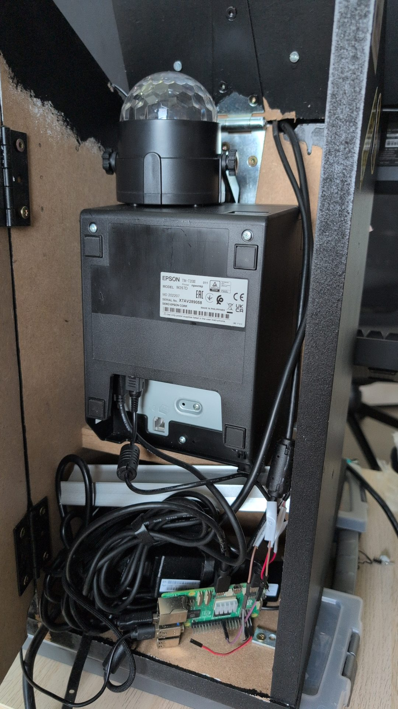

4 parts.
brain · screen · printer · lights
↓ press down to walk the hardware
1
Raspberry Pi 5
the brain
tiny Linux computer · runs everything · boots straight into the kiosk
no desktop · no login · no mouse
2
Screen
the hacker UI
full-screen Chromium · fake tmux + htop · glitching DIVD logo
attackersdefenders
locked down — Alt-Tab / F11 / escape all blocked
3
Printer
Epson TM-T20III · thermal · USB
no ink · the whole receipt is drawn as an image
DIVD logo · your idea · IDEA No. NNNN
18 styles
/big /tiny /comicsans /qr /barcode
/glitch /wanted /leet /mirror /lacewing
type a slash-command before your idea
4
LED strip
15× WS2812B · Knight-Rider sweep
print → green flash · image → rainbow
volume keys = speed & brightness · never breaks a print
How it all plugs in
| Part | Connection | On the Pi |
|---|
| Screen | HDMI | HDMI0 |
| Keyboard | USB | USB |
| Printer | USB | /dev/usb/lp0 |
LED strip DIN | SPI0 MOSI | pin 19 · GPIO 10 |
| LED power | +5V / GND | pin 2 / pin 6 |
LEDs ride the SPI bus — one wire of data, no extra driver chip
Inside the box

Epson printer · Raspberry Pi 5 + cabling · one hinged case
ToF sensor
VL53L0X time-of-flight · on I²C (SDA pin 3 · SCL pin 5)
the plan: wave your hand to drive the lights
✗ dropped — flaky & fiddly
→ replaced by the keyboard's volume keys
Don't break out.
it's a public booth — people will poke at it
Alt-TabAlt-F4F11
right-clickCtrl-Alt-F‹n›
all blocked → screen flashes red
JS key-guard · cage = no window manager · VT-switch off (srvrkeys:none + NAutoVTs=0) · no cursor · admin is password-gated